Lota 29 · form og formúlur
17 skýringarmyndir fyrir alla sjö kaflana. R táknar rúmmál og YF yfirborðsflatarmál.
1. tími · Ferstrendingar
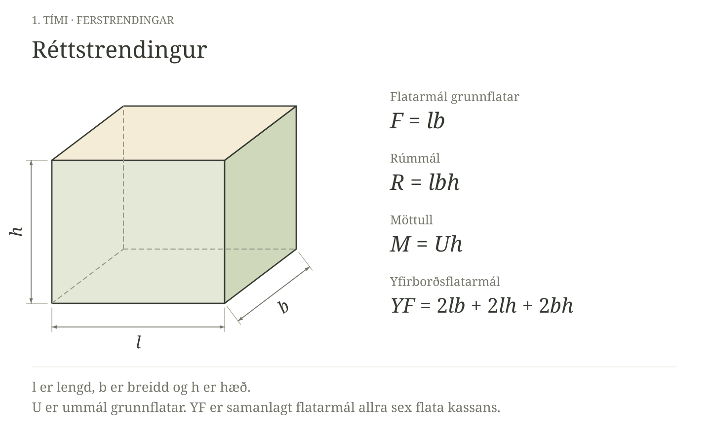
1. tími, við „Rúmmál kassa“ og „Yfirborðsflatarmál kassa“.PNGSVG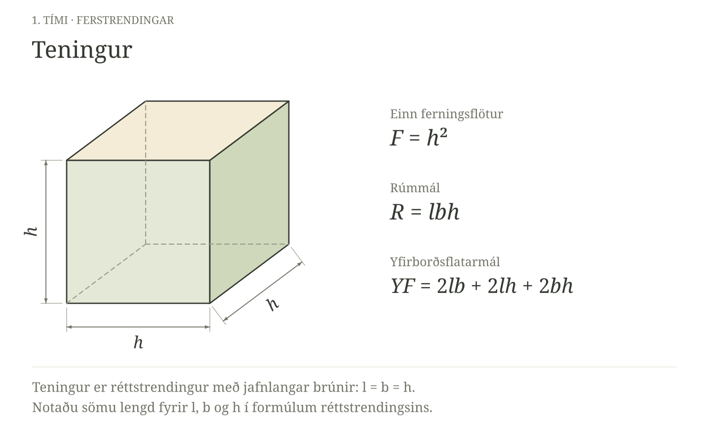
1. tími, við „Teningur og snið“.PNGSVG2. tími · Strendingar
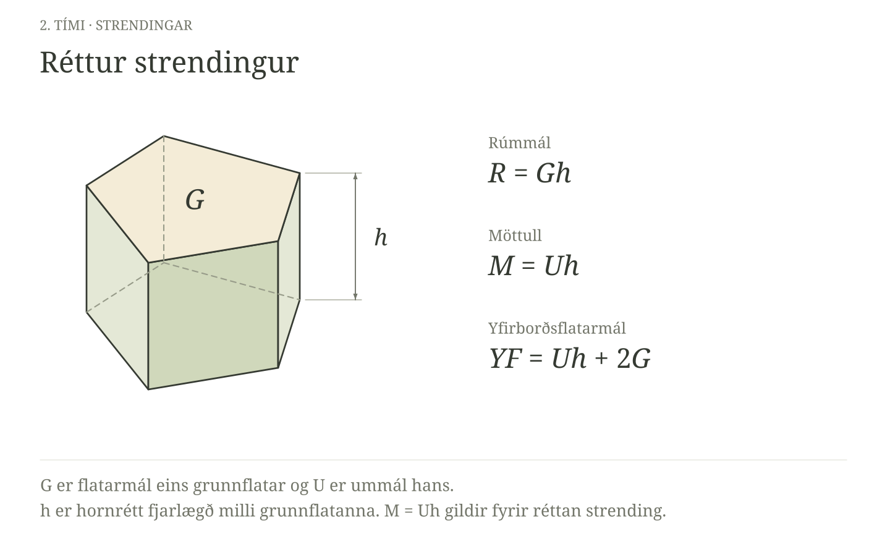
2. tími, við „Tveir eins grunnfletir“ og „Flatarmál möttuls og alls yfirborðs“.PNGSVG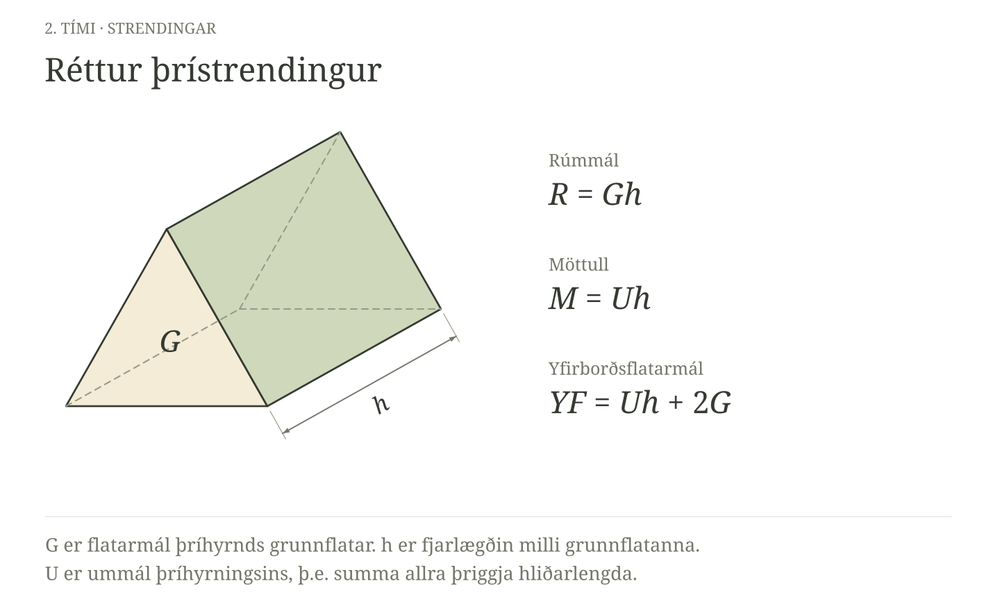
2. tími, við skýringuna á rúmmáli þrístrendings.PNGSVG3. tími · Sívalningar
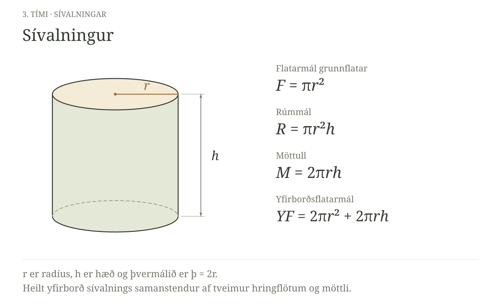
3. tími, við „Hringlaga grunnfletir“.PNGSVG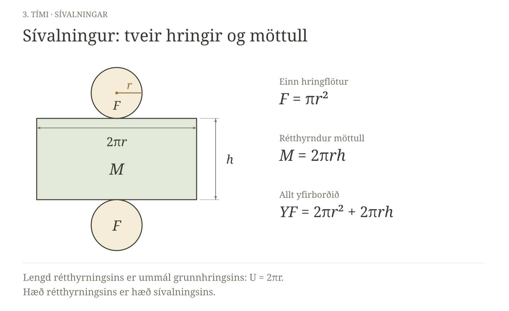
3. tími, við „Flatarmál möttuls sívalnings“.PNGSVG4. tími · Strýtur
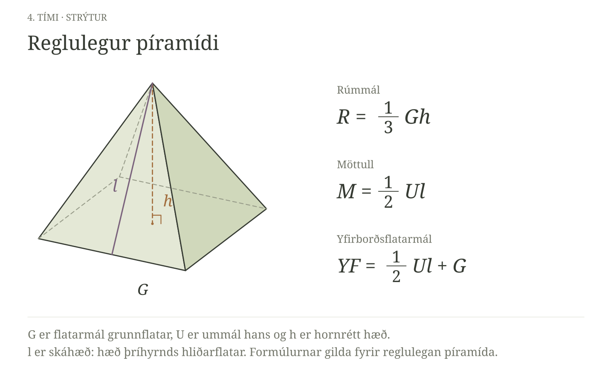
4. tími, við „Grunnflötur og toppur“.PNGSVG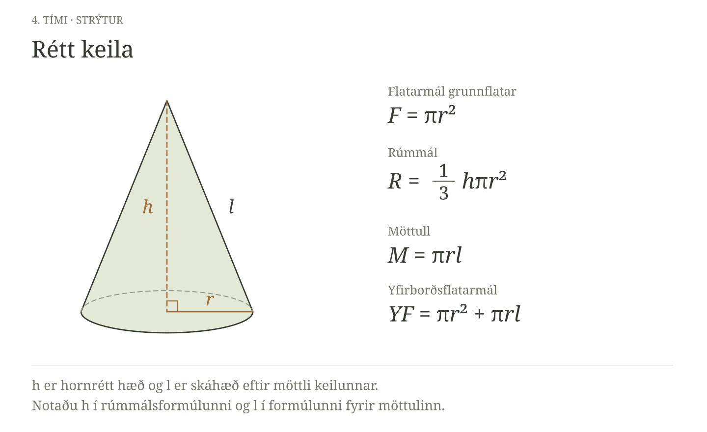
4. tími, við „Rúmmál keilu“ og „Skáhlið keilu og flatarmál möttuls“.PNGSVG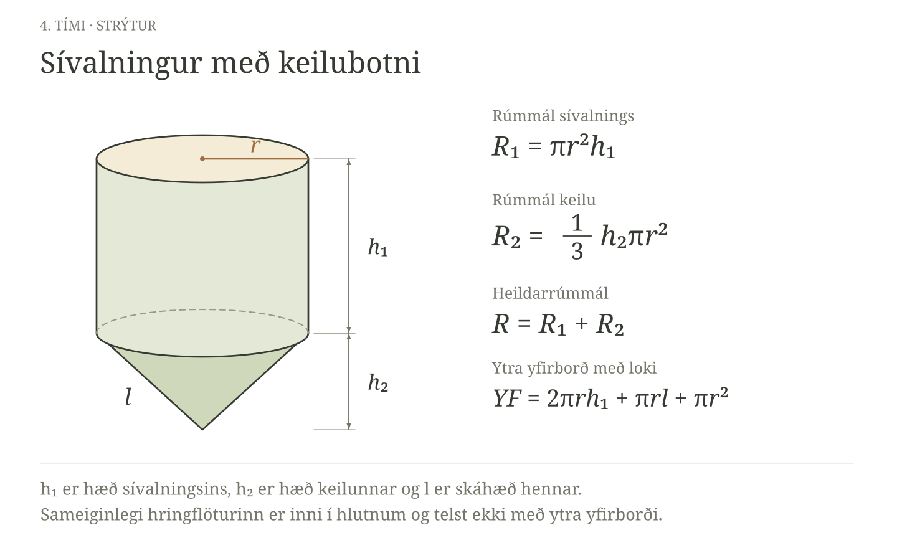
4. tími, við „Samsett rúmmál“.PNGSVG5. tími · Kúlur
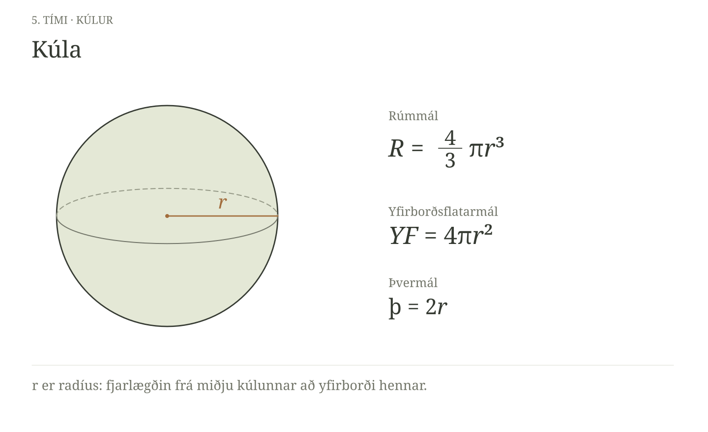
5. tími, við „Radíus, þvermál og rúmmál kúlu“.PNGSVG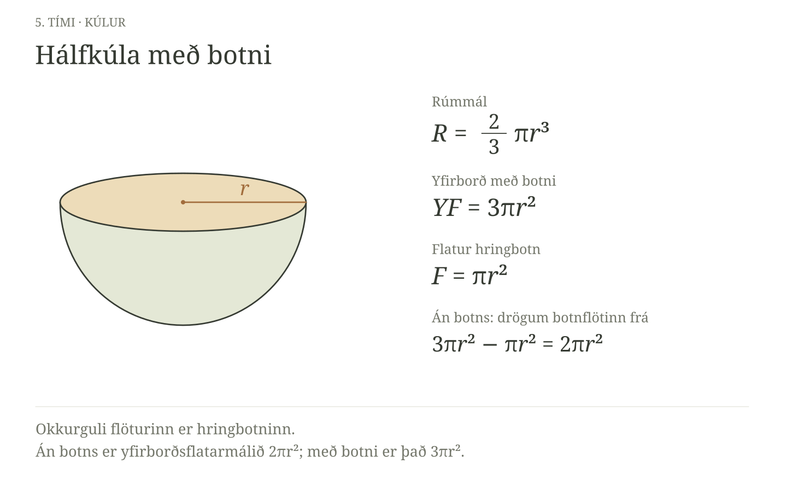
5. tími, við „Yfirborðsflatarmál kúlu og hálfkúlu“.PNGSVG6. tími · Hagnýt dæmi I
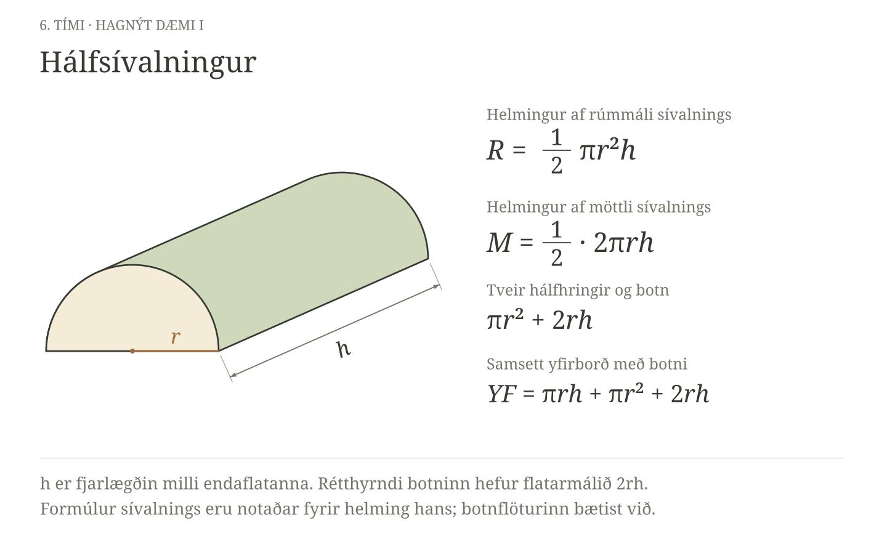
6. tími, við „Rúmmál og efni í skýli“.PNGSVG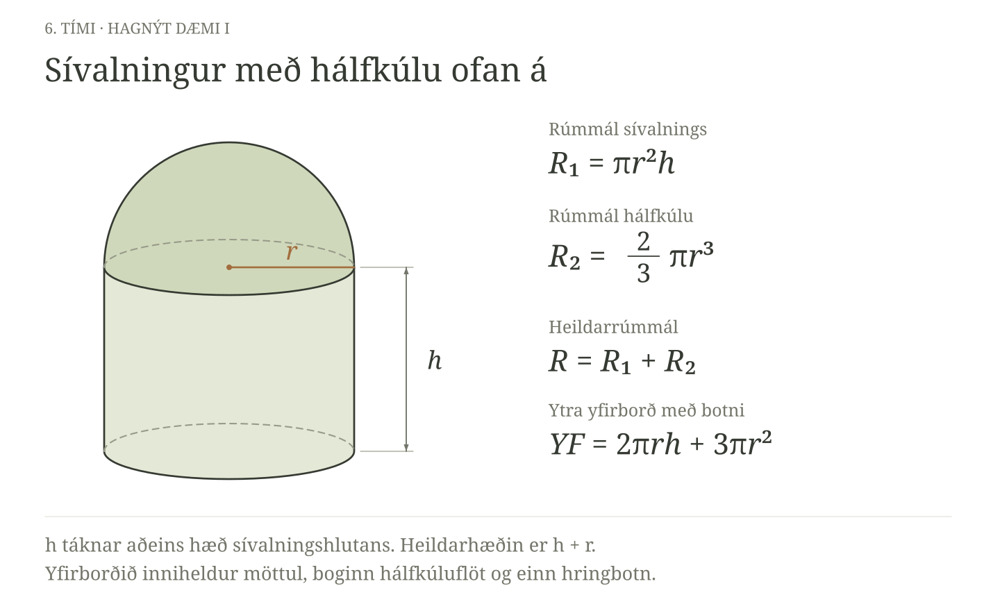
6. tími, við samsett rúmmál sívalnings og hálfkúlu.PNGSVG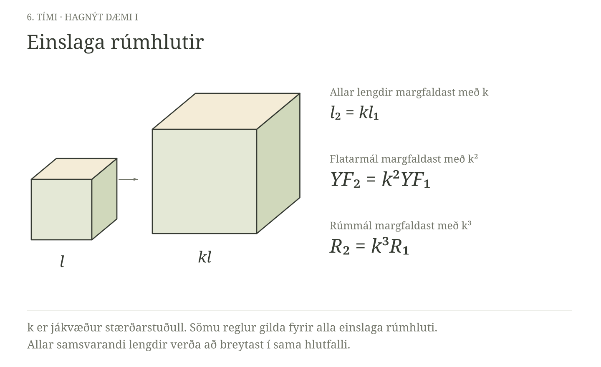
6. tími, við „Prósentubreyting á lengd, flatarmáli og rúmmáli“; einnig 7. tími, hlutföll.PNGSVG7. tími · Hagnýt dæmi II
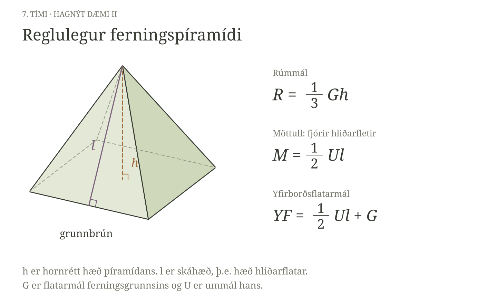
7. tími, við „Hæð hliðarflatar og óþekktar grunnbrúnir“.PNGSVG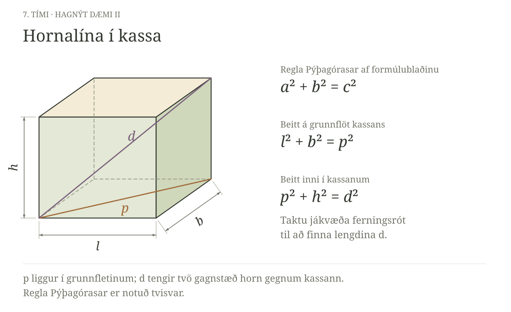
7. tími, við „Hornalína í kassa“.PNGSVG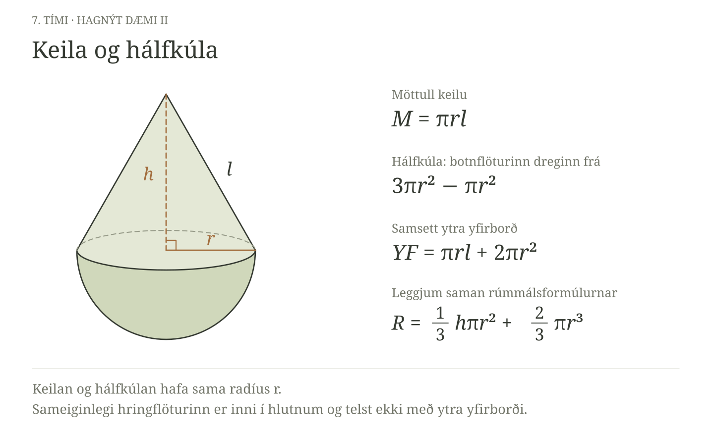
7. tími, við dæmið um keilu á hálfkúlu og ytra yfirborð.PNGSVG